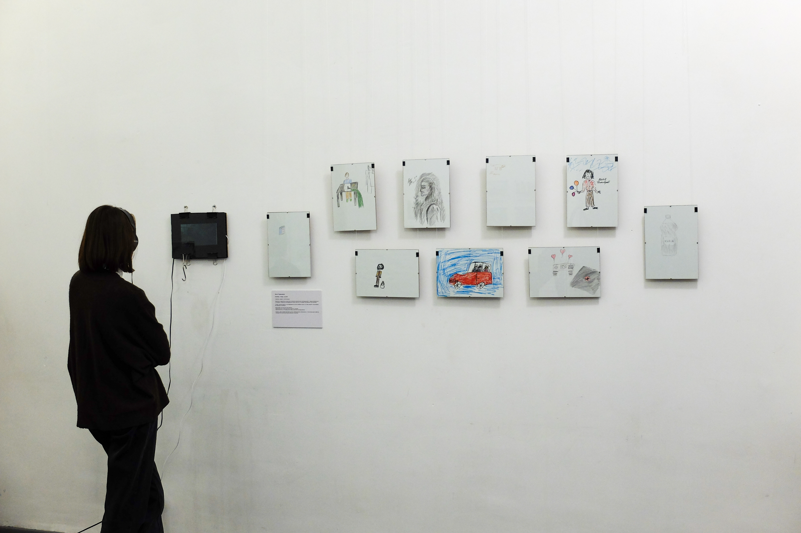

любовь, товар, чужой
love, product, alien
Проект реализован в рамках лаборатории "Остров", исследовавшей локальную специфику района улицы Фабричной города Новосибирска. Мы решили перераспределить выделенный под проект бюджет (10000 рублей) в пользу житель.ниц района. Мы предложили девяти случайно выбранным на прогулке житель.ницам игру - в обмен на 1000 рублей нарисовать одну из трёх вещей: что респондент.ка любит, на что собирается потратить свой гонорар, или меня, т.е. предложившую эту практику незнакомку. После согласия на участие в исследовании и съёмку мы начинали снимать происходящее вокруг нас, параллельно пытаясь завязать разговор о локальной идентичности. Мы не сообщали участни.цам о том что их работы и записи разговоров будут экспонированы и сожалеем об этом.
The project was implemented as part of the "Ostrov" laboratory, which investigated the local specifics of the Fabrichnaya Street neighborhood in Novosibirsk. We decided to redistribute the budget allocated for the project (10,000 rubles) in favor of the residents. We offered nine randomly chosen persons a game - to draw one of three things for a fee of 1000 roubles: what the respondent likes, the object they are going to spent their honorarium on, or me, i.e. the stranger who suggested the practice. After receiving participation and filming agreement, we started filming what was going on around us, while trying to start a conversation about local identity. We didn't tell the participants that their We did not tell the participants that their work and the recordings of their conversations would be exhibited, and we regret that.
"Ostrov" laboratory curator: valerija novitskaya
fab8 gallery
as part of 49 hours Novosibirsk, 2021